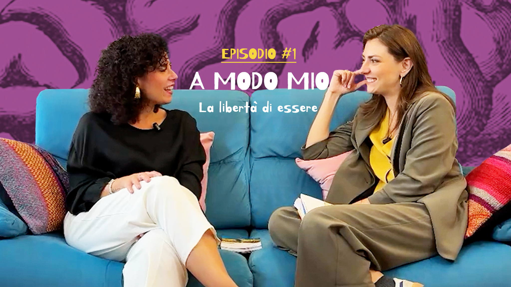
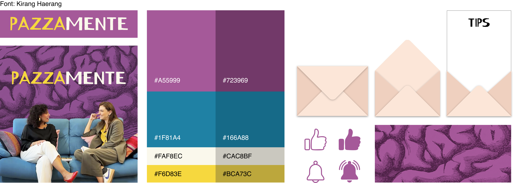

Overview
Mental health content in Italy tends to fall into one of two traps: it's either clinical and inaccessible, or it's oversimplified to the point of being useless. Pazzamente was built to occupy the space in between — a place where psychology is taken seriously but talked about like a conversation between two friends on a couch.
Pazzamente is an Italian psychology podcast co-hosted by Angela Mammana — psychologist, psychotherapist, and author — and Martina Gatto — TV presenter and actress. Each episode starts from a topic rooted in Angela's book A modo mio — la libertà di essere, then expands into a free-ranging conversation that ends with a practical tip the listener can actually try. The name says it all: to build a life that truly fits you, you need a bit of pazzia — a bit of crazy, a willingness to colour outside the lines.
Pazzamente started as a commission — Angela and Martina came to me to bring the project to life. I conceived the format, built the brand from scratch, and took responsibility for everything: the filming, the editing, the platform distribution, and the social media strategy. It has since grown into something I continue out of genuine passion. It is currently live on YouTube and Spotify, with new episodes in production.
Sole creative director and producer across every phase of the project: concept and format design, brand identity (name, logo, visual system), filming and directing, video editing, platform distribution (YouTube, Spotify and more), and social media content and strategy.
- Adobe Premiere Pro
- Adobe Illustrator
- Adobe Photoshop
- Figma
Status
Live · New episodes in production
Concept & format
The starting point was Angela's book — A modo mio is about self-affirmation and identity, about the freedom to be exactly who you are. That's a rich psychological territory, but also one that risks feeling heavy or abstract without the right container. The question I kept asking was: how do you make people feel like they're learning something real about themselves without feeling like they're in a lecture?
The answer was the couch. Two people, different worlds — a psychotherapist and a TV presenter — having the kind of honest, wandering conversation that friends have when they trust each other. Angela brings the knowledge; Martina brings the curiosity, the irony, and the energy that makes the content feel alive rather than studied. The tension between their perspectives is the format.
Episode structure
Each episode runs approximately 20 minutes and follows a consistent arc:
- Opening topic — drawn from the book, introduced naturally in conversation rather than as a formal premise
- Free exploration — the conversation expands, connects to related themes, and moves between the psychological and the personal
- Practical tip — the final 5 minutes always end with something concrete the viewer can actually try
That last element was a deliberate design choice. Mental health content often leaves people with insight but no action. Ending every episode with a tool — something small and doable — was a way of respecting the viewer's time and making the podcast genuinely useful, not just interesting.
Brand identity
The name Pazzamente is an Italian adverb meaning "madly" or "crazily" — but it also splits into pazza (crazy/woman) and mente (mind). That double meaning was exactly right: the show is about the mind, and it takes a certain willingness to be a bit crazy to live authentically. The wordplay is visible in the logo, where PAZZA is set in yellow — warm, bold, playful — and MENTE follows in white, grounding it.
Visual system
The palette is built around a deep, saturated violet-purple — the colour of the mind, of introspection, of something slightly outside the ordinary. Against it, the yellow of PAZZA pops with energy and warmth. The teal used in the episode backgrounds adds a calmer, more intimate register for the longer-form content.
The background texture — an engraving-style illustration of a brain — was chosen deliberately over something more clinical or abstract. It has a vintage, almost curious quality that matches the show's tone: serious about psychology but not afraid to be playful about it.
Episodes
Three episodes are currently live, each exploring a different dimension of the book's central theme of identity and self-affirmation:
The freedom to be yourself — where identity begins and how we learn to claim it.
How crisis can become a turning point — finding yourself again after everything changes.
How new experiences reveal parts of ourselves we didn't know existed.
Production
Every episode was filmed, directed, and edited by me. The visual language of the show — the couch setting, the warm lighting, the intimate two-shot framing — was a deliberate choice to make the conversation feel like something you're overhearing rather than watching. The camera stays close. The edit keeps the energy of real conversation rather than trimming it into something too polished.
For the teal-tinted episode cuts used in Shorts and social content, I developed a colour grading approach that creates a distinct visual register for the shorter-form content — more atmospheric, more contained — while keeping it clearly part of the same world as the full episodes.

Reflection
Pazzamente started as a commission and became something I genuinely care about — which is the best thing a project can do. It stretched me the furthest not because any single part of it was beyond my skills, but because I had to hold all of it together at once. Designing the brand, directing the shoot, editing the footage, managing the distribution, and running the social media are things I've done separately before. Doing them all in service of one coherent vision, from scratch, with real collaborators and a real audience, was a different kind of challenge.
The most important design decision I made on this project wasn't visual — it was the format. The 5-minute practical tip at the end of each episode was something I insisted on from the beginning, and it's the thing viewers mention most. Designing a container for content is as much a design problem as designing a visual identity, and I'm glad I treated it that way.
What I've learned from watching people engage with it is that the tone is the product. The warmth, the lightness, the sense that two people are genuinely talking rather than performing — that's what makes people come back. And that tone had to be designed just as deliberately as the logo or the colour palette. New episodes are currently in production, and I'm looking forward to seeing where the conversation goes next.
Credits
Commissioned by: Angela Mammana & Martina Gatto
Brand identity & creative direction: Alessandra Sgariglia
Filming, directing & editing: Alessandra Sgariglia
Platform distribution & social media: Alessandra Sgariglia
Hosts: Angela Mammana (psychologist, psychotherapist, author) · Martina Gatto (TV presenter, actress)
Inspired by: A modo mio — la libertà di essere by Angela Mammana
Social media
The social media strategy was built around making the content feel as native to each platform as possible rather than just repurposing the same clip everywhere. On Instagram and TikTok, the teal-graded vertical cuts work as standalone moments — each one complete enough to make sense without the full episode, but interesting enough to send people looking for it.
The visual language of the social posts extends the brand system: the same brain texture, the same typography treatment, the same warm-playful tone. Every touchpoint — from the YouTube banner to the Spotify cover to an Instagram post — reads as unmistakably Pazzamente.